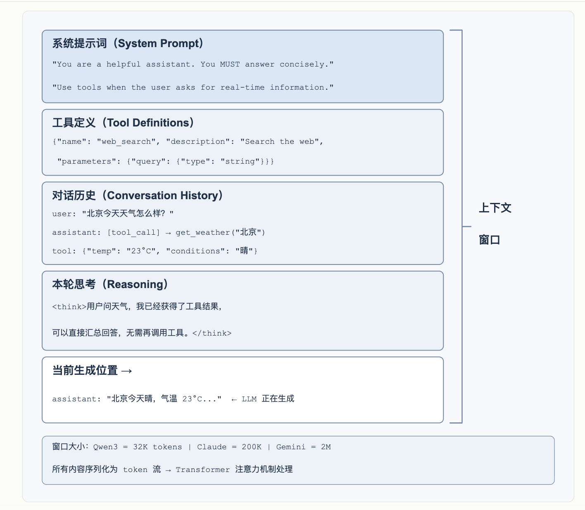
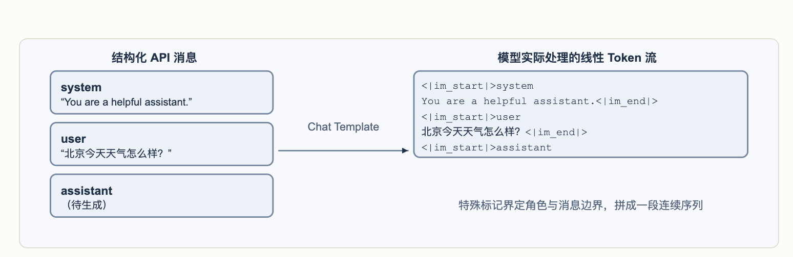
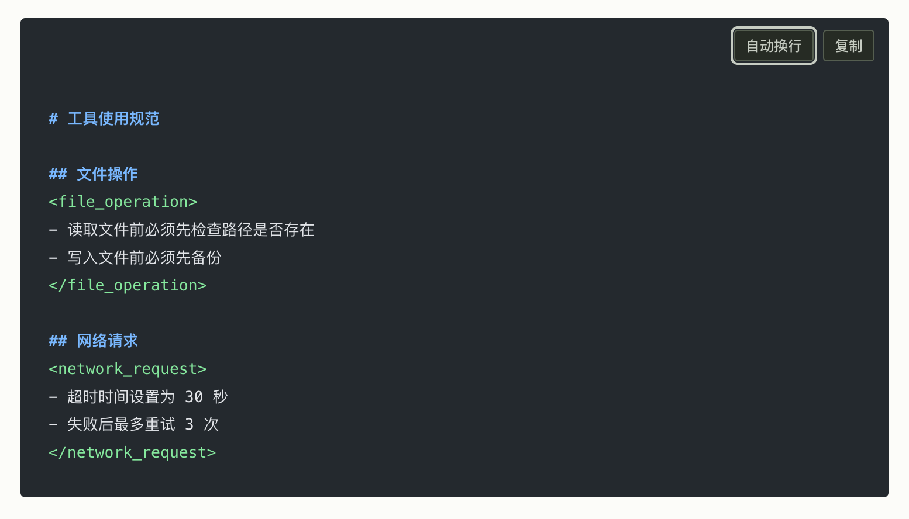
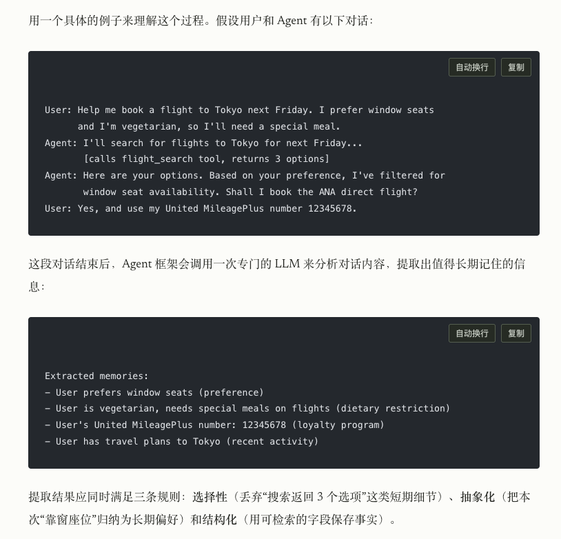
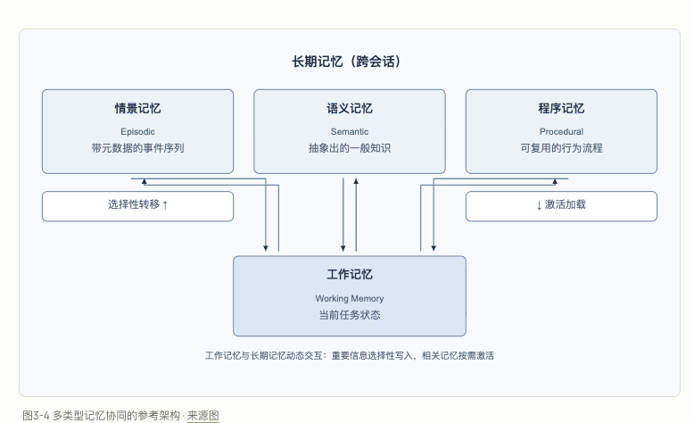
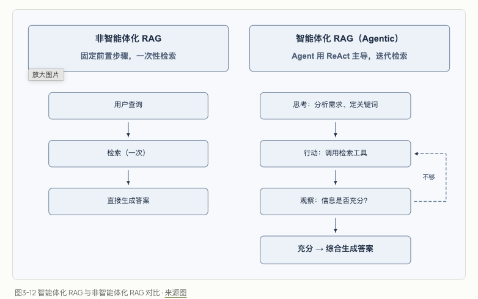

← 返回索引
Agent 开发读书笔记
来源：AI Agent 开发
覆盖：Agent 编排范式、上下文工程、记忆与知识库、以及一次真实项目迁移的复盘。
一、入门
Harness 的补丁会被模型内化
- Harness 上打的很多补丁，会随着模型变强被模型自己内化。
- 例如「一步步思考（Think step by step）」这类技巧——当年必须显式提示，现在新模型已经默认具备。
推论：Harness 里写的很多 workaround 是有保质期的。别把对某个模型缺陷的补丁，当成永久架构。
编排模式
核心原则：保持简单。能不用复杂编排就不用。
Workflow 模式（确定性编排）
预定义的路径编排 LLM 和工具系统，节点之间的流转顺序是固定的。
- 作者提到的 scott 类似这种模式，但被 emux 平台绑定了。
以订机票 Agent 为例，工作流可以设计为四个固定节点：
- 核实用户身份——调用身份验证 API，确认用户是谁
- 搜索可用航班——根据用户需求查询航班数据库
- 完成付款——调用支付接口扣款
- 确认预订——调用预订 API 锁定座位，向用户发送确认信息
自主模式（Autonomous Agent）
当工作流的固定路径无法满足需求时，就需要自主 Agent。与工作流的核心区别在于：执行路径不是预先定义的，而是 Agent 根据环境反馈实时决定的。
同样订机票，用户说「帮我订下周三去上海的机票」，Agent 会自行决定：
- 先搜索航班 → 发现需要登录 → 回头核实身份
- 再搜索 → 发现最便宜的航班需要转机 → 主动询问用户是否接受
- 用户说不要转机 → Agent 调整搜索条件……
自主 Agent 特别适用于开放式问题——这类问题难以预测所需的步骤数量。
两种模式的选择与混合
很多系统会混合使用两种模式：
- 关键的、有严格合规要求的流程 → 用工作流保证可靠性
- 需要灵活决策的部分 → 切换到自主模式
通用设计模式
| 模式 |
要点 |
| Proposer–Reviewer |
类似 GAN 的方式。两个不共享上下文的角色分别提出与审查，避免同源偏见。 |
| Progressive Disclosure |
渐进式披露：不把全部信息一次性塞进上下文，先给一份可检索的目录，再按需加载细节。同时优化 上下文预算 与 选择精度。 |
| Append-only |
状态以追加方式演进，已写下的内容不再回头修改。换来可缓存、可重放、可审计。 |
| Boundary Set + Retention Set |
边界集 + 保留集：任何一次修改都要同时在「它应当改变的那批样本」和「它不应影响的那批样本」上验证。类似搜索系统 top + random 的回归测试。 |
| 最小 diff + 可回滚 |
每次修改尽量小、带来源、可单独回滚，而不是整体重写。它让归因成为可能——出了问题能定位到具体哪一次改动。 |
总结
Agent = 大脑 + 眼睛 + 手脚。
LLM 是大脑（决策核心），上下文是眼睛（决定它能看到什么），工具是手脚（决定它能做什么）。三者缺一不可。
- 扩展眼睛和手脚是最主要的能力杠杆。在模型固定时，重新定义或扩展观察空间与动作空间——也就是扩展上下文和工具——往往能直接把原本不可解的任务变为可解。
- 眼睛（上下文）是决定性因素。上下文由静态前缀（系统提示词 + 工具定义）和动态轨迹（消息历史）构成。消融实验表明各组件并不等价：去掉工具定义或工具执行结果会直接夺走行动与闭环能力；去掉另外两者，代价取决于信息能否从当前观测重建。ReAct 循环的本质就是通过不断追加轨迹让模型持续推进任务。
- Harness 是竞争力所在。模型能力正在商品化，真正的差异在于 Harness。生产级 Agent 系统里，绝大部分代码都在实现围绕上下文和工具的约束、验证与纠正机制，确保 Agent「可靠地做事」。
- 从工作流到自主 Agent 的演进顺序：先优化提示词 → 再考虑工作流 → 最后才引入自主 Agent。这是降低意外风险最实用的顺序。
二、上下文工程
Agent 只能基于它看到的信息做决策。上下文的设计和管理，称为上下文工程（Context Engineering）。
所谓上下文，就是每次对话时 AI 实际「看到」的全部信息：对话历史、开发者预先写好的行为规则（系统指令）、可用的外部功能说明（工具描述）等。

上下文组成
上下文的质量才是 Agent 能力的真正关键。一个中等能力的模型配上精心组织的上下文，往往能胜过一个顶级模型在信息匮乏下的盲目摸索。
- 大多数团队的关键知识都是隐性的：架构决策只有老员工记得，业务规则靠口口相传，重要背景锁在私聊记录里。如果团队本身就是一个信息黑洞，再好的 Agent 也无计可施。
- 对远程工作友好的团队，往往也对 AI Agent 友好。对 AI 友好的环境：信息是公开的、可检索的、结构化的。
理解 LLM API
- 最基本的交互模式——每次调用都是无状态的，模型需要的信息必须在请求的 messages 列表中完整提供。
- 模型只是发出了调用请求，真正执行工具的是 Agent 框架。模型负责决策（调什么工具、传什么参数），框架负责执行（实际调 API、跑代码）。
- Agent 框架的核心工作就是 管理 messages 列表：在合适的时机追加消息，然后把整个列表送给模型。本章所有上下文工程技术，本质上都是在优化这个列表的内容和结构。
- 不同 API 格式略有差异，理解格式才知道怎么编程处理。
- 并行工具调用：模型在一次输出中同时生成多个工具调用请求，框架检测到后可并行执行，实现流水线加速。
- 终止判断：工具结果送回后，模型判断信息是否足够。够了就直接输出最终回复（不含工具调用）；不够就继续输出新的调用请求，触发下一轮 ReAct 循环。
KV Cache 友好的上下文设计
模型每生成一个 token，都要回头看一遍前文所有 token 的中间计算结果。如果每轮都从头算，开销会随上下文长度爆炸式增长。
KV Cache 的做法：把前文的中间计算结果缓存下来，下一轮只计算新增 token。前提是要复用的上下文 token 前缀保持不变。
若 token 序列从某个位置开始不同，首个不同 token 及其之后的 KV 状态需要重新计算；此前位置的 KV 状态不受这次改动影响。
好的实践
- 系统提示词和工具定义一旦确定就不要动态更改。
- 动态信息永远追加到末尾——时间戳、用户状态等变化内容，作为新消息追加到对话末尾，而不是修改已有的系统提示词。
- 使用标准 API 格式，不要自行拼接消息。
从 API 消息到模型 Token：Chat Template

从 messages 到模型 token 的模板转换
常见的错误上下文管理方式
| 错误模式 |
问题 |
| 动态系统提示词 |
最常见的错误。每轮改动 system 内容，前缀失效，KV Cache 全废。 |
| 动态用户配置 |
试图在每次请求中更新用户状态（剩余 API 调用次数、账户余额）。更好的方案是通过专门的状态管理机制按需处理。 |
| 工具定义动态排序 |
另一个隐蔽的陷阱——排序一变，工具定义区的前缀就变了。 |
| 滑动窗口 |
只保留最近几条消息。两个严重问题：① 破坏上下文前缀一致性，KV Cache 失效；② 可能丢失关键的工具调用结果。（遗留问题：那到底该怎么丢弃消息？） |
| 文本格式化 |
最具破坏性的模式之一：把结构化的 role-content 消息转成 "USER: .. ASSISTANT: .." 的纯文本流。 |
为什么文本格式化危害这么大
- 模型在训练阶段接受了大量基于角色的对话数据，已学会解析结构化格式。
- 转成纯文本后，模型需要额外消耗注意力去推断角色边界和对话结构。
- 后果：重复执行已完成操作、忽略工具调用结果、该调工具时却生成文本、格式解析错误。
KV Cache 与 Prompt Cache：两个层级的缓存
| KV Cache | Prompt Cache |
|---|
| 层级 |
模型内部机制 |
推理引擎的优化 |
| 作用范围 |
一次推理过程内，缓存已计算 token 的键值对 |
多次 API 请求之间，缓存相同前缀的计算结果 |
| 效果 |
加速单次请求内的 token 生成 |
减少跨请求的重复计算成本 |
两者优化原理相似（都利用前缀不变性），但作用层级不同。
系统提示词设计
① 语气与风格：系统提示词的「人格」
- 示例：
You MUST answer concisely with fewer than 4 lines、keep your response to 1-2 sentences
- 过度使用会导致效果被稀释，应保留给真正关键的约束。
② 结构化提示：系统提示词的「格式」
- 现代大模型对结构化输入展现出显著敏感性，这源于训练数据中包含大量结构化内容。

结构化提示的效果
③ 业务规则细化：系统提示词的「内容」
构建生产级 Agent 时，最容易被忽视却最关键的环节是业务规则细化。这不是技术问题，而是产品设计问题，需要产品经理深度参与。
- 模糊的规则（「根据任务情况选择合适的计费类型」）会导致 Agent 行为极不稳定。
- 在优秀的 Agent 公司里，提示词一般由产品经理来设计。
④ Few-shot 示例：何时给模型看例子
- 需要示例：期望输出难以用规则精确描述时——特定风格的文案、结构化报告格式、客服回复的语气分寸。与其堆砌冗长定义，不如直接给两三个高质量输入-输出示例，效果往往胜过等量篇幅的抽象规则。
- 不需要示例：模型本来就擅长、规则又容易说清的任务，示例只是浪费 token。
⑤ 工具定义的设计
从 Claude Code 的工具定义中可以观察到，每个描述都精心设计了以下要素：
- 使用边界：
NEVER invoke grep or rg as a Bash command
- 具体示例：
timezone: 'America/New_York'
- 性能提示：
Batch your tool calls together
- 协作关系：
Use the Read tool at least once before editing
2026 年以来，工具定义本身也在向「Skills 式」的渐进式披露演进，且已是 API 层原生能力，而非框架补丁：
- Claude Code 对 MCP 工具默认延迟加载——会话启动时只注入工具名称和服务器说明，完整 schema 待模型搜索到之后才注入。
- Codex CLI 的
tool_search（BM25 检索）不是可选特性，而是默认开启的架构。
消融实验：怎么验证提示词的每一部分
消融实验方法（逐个移除系统组件来研究其作用）。核心是控制变量法：设定基线配置（结构化系统提示词、完整工具描述、专业中立语气），然后系统性地修改不同方面，观察对任务完成率、交互效率和用户满意度的影响。
| 维度 |
实验操作 |
结果 |
| 语气与风格 |
三种风格：专业中立商务语气；Trump 风格（夸张修辞 + 极度自信，「我会给你订到史上最棒的航班，没人比我更会订票」）；Casual 风格（轻松口吻 + 表情符号） |
风格显著改变表达方式，但对任务完成率影响相对有限，说明模型风格适应能力很强。 |
| 信息组织 |
保留所有规则内容，但打乱组织结构：去掉标题层次，把有序流程拆成无序规则集合 |
灾难性后果：成功率下降超过 30%。模型难以识别优先级和依赖关系——「先验证身份再处理退款」被打散后，Agent 有时会跳过验证直接退款。 |
| 工具描述 |
保留函数签名和参数定义，移除所有描述性文本 |
工具调用错误率增加 45%，经常传入无效参数值或误解参数含义。 |
对人类友好的信息组织方式，对模型同样友好。
Skills：领域能力的可组合单元
- 核心思想：把 Agent 能力模块化为独立的、可按需加载的知识包。每个 Skill 本质上是一套包含专业领域指导的提示词集合。
- 每个 Skill 必须包含一个
SKILL.md，开头是 YAML frontmatter（顶部用 --- 分隔的元数据块），包含 name 和 description 两个字段。
description 是路由决策的关键。它应当足够短（控制常驻 token 量），但写法要像路由条件而非功能介绍——明确写出「何时使用」和「何时不使用」的边界，并给出几条典型反例，以减少宽泛匹配带来的误触发。
- Skills 的价值不仅在于优雅的上下文管理，更在于为领域知识的积累提供了一条可持续路径：每个 Skill 自包含，可独立开发、测试、版本控制和分享。
Agent 状态栏：用元信息增强轨迹管理
认知待补强 作者自评：这个内容我认识不足，需要继续实践。
如何让 Agent 随时看到任务进度、环境变化和工具调用计数等运行时状态？
- 提示工程给的是静态指令，而 Agent 执行过程中还需要动态感知自身状态与任务进展。框架把这些动态信息整理成结构化摘要注入上下文，这种机制称为 Agent 状态栏（Agent Status Bar）。
- 它之所以有效，源于注意力机制的一个本质特性：上下文学习更像检索而非推理——模型擅长从已有内容中查找信息，但不擅长主动归纳总结。
- 本质是：把分散在上下文各处的隐式状态提炼为可直接使用的显式知识。
状态栏的构成
- 任务规划（TODO 列表）：复杂多步骤任务轨迹会很长，Agent 容易过分关注当前局部子任务，忘记用户原始诉求、核心约束和后续工作。把任务分解成清晰步骤放在轨迹末尾，不断提醒当前进展和后续目标，确保行动与总体规划一致。
- 环境状态摘要：动态环境信息（系统时间、工作目录等）、异常操作提醒（「该工具已被重复调用 N 次」）、以及从隐式状态到显式观察的转换。
在上下文中的位置
实现细节：Agent 状态栏在 API 层面实际上是作为一条 user 角色的消息插入到上下文末尾的——而不是修改开头的 system 消息。
Harness 是在借用 user 角色这个消息槽位，向模型注入由 Agent 框架自动生成的系统状态信息——内容并非来自真实用户，只是复用了 user 角色格式挂到末尾。
状态更新的两种实现与缓存代价
| 实现 |
做法 |
收益 |
代价 |
| 每轮替换 |
每次 API 调用前，从消息列表移除上一轮状态消息，末尾追加最新状态 |
上下文只有一份状态，永远是最新的 |
移除旧状态会使其位置之后的所有缓存失效 |
| 持久追加 |
状态消息一旦注入就永久留在轨迹中，每轮只在末尾追加新的 |
对缓存完全友好：所有消息只追加不修改，前缀始终稳定。Claude Code 的 <system-reminder> 即此方式，历史状态保留在 transcript 中从不删改 |
陈旧状态累积，既占 token，也要求模型自己关注「最新一条」而忽略过时的旧状态 |
状态栏的维护：尽量用代码维护，而不是让模型自己维护。
上下文压缩
随着多轮交互深入，上下文不断膨胀。这一节讨论相反方向：如何为上下文做减法——什么时候压缩、怎么压缩、为什么即使没满也应该压缩。
① 为什么需要压缩：不只是长度问题
- 长度与成本约束。上下文窗口有限，工具调用结果动辄数万字符，几轮就可能撑满，任务被迫中断。同时 token 越多，API 成本越高，推理延迟也急剧上升。
- 提升思考质量。总结后的知识比原始形式更利于模型使用。
- 缓解上下文焦虑（Context Anxiety）。当模型认为窗口即将耗尽时，可能在任务尚未完成前提前收尾。
② 上下文学习的内部机制：检索而非推理
- 注意力机制擅长在已有内容里「查找」，却不擅长在一次前向传播里主动「归纳统计」。
把需要思考才能得到的结论，变成可以直接检索的知识。
- 长上下文会导致检索精度下降。明明窗口远没满，Agent 却突然找不到关键信息，或反复纠结一个早已解决的问题——这就是上下文腐化（Context Rot）。
- 设计原则：与其期望模型从冗长上下文中自动学习，不如主动、显式地进行知识提炼。虽然需要额外计算投入（专门的 LLM 调用来做总结），但产出的是经过压缩的高密度知识表示——不要让模型被动地在海量信息中检索，而要主动为模型提供经过提炼的结构化知识。
③ 压缩与 KV Cache：看似矛盾，实则互补
前面反复强调 KV Cache 要求前缀不变，但压缩不就是要改中间内容吗？关键在于压缩发生的时机和位置：
- 压缩不是在单次 API 调用的过程中修改上下文，而是在两次 API 调用之间。
- System Prompt 和 Tool Definitions 永远不动。
- 压缩对象是对话历史中的 tool results。当框架用摘要替换原始工具输出时，替换位置之后的缓存失效，但之前的缓存仍然有效。
这是有意识的权衡：不压缩，上下文膨胀超出窗口，任务直接失败；压缩后，虽然损失部分缓存，但长度可控、信息密度更高。所以压缩频次需要权衡——频繁压缩会频繁破坏缓存。
④ 生产级的压缩策略
⑤ 隔离替代压缩
压缩是在信息已经进入上下文之后做减法；更釜底抽薪的思路是：让大体积的中间信息根本不进入主上下文。
- 子 Agent 上下文隔离：主 Agent 把「在代码库中大范围搜索」这类会产生海量中间内容的任务，委派给独立的子 Agent。
用隔离代替压缩：压缩是有损的、需要额外 LLM 调用的事后补救；隔离让噪声从一开始就与主上下文绝缘，主 Agent 的 KV Cache 前缀完全不受影响。
代价：子 Agent 看不到主 Agent 的完整上下文，任务描述必须自包含、目标明确。
三、记忆和知识库
核心问题：如何让 Agent 在对话结束后仍然记住用户、记住知识。
- 用户记忆：针对单个用户的个性化记忆——Agent 在交互中逐渐了解其偏好、习惯和需求，构建专属于该用户的知识模型。
- 知识库：面向所有用户共享的集体知识——行业法规体系、公司内部操作流程、技术领域专业文档。
前者让 Agent 成为「懂你的助手」，后者让 Agent 成为「领域专家」。

记忆与知识库的分工
记忆能力的评估：三层次框架
什么样的记忆系统算「好」？
学术界已发布若干公开基准，其中 LoCoMo（Long-term Conversational Memory）较具代表性：
- 构造平均约 300 轮、最多 35 个会话的超长多轮对话；
- 通过三类任务考察记忆与理解能力：问答（细分为单跳、多跳、时间推理、开放域、对抗性问题）、事件摘要、多模态对话生成。
Agent 场景的三层次评估框架
- 基础回忆——最根本的能力，要求准确存储和检索用户直接提供的、结构化的、无歧义的信息。
- 多会话检索——面对来自不同对象、不同时期的多段会话时，能检索出所有相关信息并推理判断。
- 主动服务——综合多个会话、甚至很久以前的信息，提供具有预见性的主动帮助，从看似无关的记忆中发现深层联系。
记忆的层次结构
记忆系统的设计可拆成三个独立维度：放哪里、怎么存、存什么。
同时记忆需要分层——就像人有短期工作记忆和长期记忆的区分。
用户记忆的四种存储格式
- Simple Notes
- Enhanced Notes
- JSON Cards
- Advanced JSON Cards
用户记忆的认知科学基础
人类记忆系统的复杂性为 AI 记忆设计提供了重要启示。认知科学把记忆划分为工作记忆（Working Memory）和长期记忆，长期记忆又细分为三种类型：
| 类型 |
定义 |
Agent 中的对应 |
情景记忆
Episodic Memory |
关于具体事件和经历的记忆 |
「用户订了下周五去东京的 ANA 航班」——记录具体事件的时间、对象和细节 |
语义记忆
Semantic Memory |
从具体事件中抽象出的一般性知识 |
「用户是素食者」「用户偏好靠窗座位」——不是某次对话记录，而是从多次交互中提炼出的稳定特征 |
程序记忆
Procedural Memory |
关于行为模式和流程的记忆 |
从反复订票模式中学到的通用流程：「先搜直飞 → 确认座位偏好 → 使用常旅客号码 → 订餐」 |
记忆框架与压缩机制
框架案例

记忆之间的关系
记忆压缩与整理
交互持续进行，记忆系统面临存储空间和检索效率的双重挑战。简单累积式存储会导致记忆爆炸，不仅消耗空间，还降低检索准确性。
多层次的记忆压缩策略：
- 重要性评分筛选。常见思路综合四个因素：
- 访问频率——经常被检索的记忆更重要
- 时间衰减——越久远越容易被遗忘
- 情感强度——带有强烈情感标记的记忆更易保留
- 信息独特性——重复信息的重要性降低
- 相似记忆分组，每组生成代表性摘要。
- 从具体情景记忆中提取一般性规律，转化为语义记忆或程序记忆。
RAG 基础：构建 Agent 的知识获取管道
- RAG 就是向量检索。
- 稠密检索懂语义，但可能漏掉关键词。
- 稀疏检索（BM25）精确匹配，但读不懂同义词。
用户记忆和知识库的增量更新
把知识库当成代码库，把每次知识变更当成一个 PR。
- Markdown 知识库、用户记忆文件和规则文档同样应当进入 Git，获得差异审查、版本历史、责任追溯和一键回滚能力。
- 生产环境不应让任何一个模型绕过审核，直接改主分支或线上向量库。
建议用 Proposer + Reviewer 架构来更新：
- 两个 Agent 应优先使用能力相近但来自不同家族的模型。
- 例如 Proposer 用 Claude，Reviewer 用 GPT；或 Proposer 用 DeepSeek，Reviewer 用 Kimi。
智能体化 RAG：将知识检索工具化

Advanced Agent RAG：检索从「管道」变成「工具」
四、实例：Emux Step Workflow → LangChain/LangGraph Agent
项目：把基于 Emux 的 step workflow 版 Checkout Q&A Agent，迁移到基于 LangChain 的代码化 Agent。
原文写作「LangXXX」，但改进第 1 条已写明「基于 LangChain 的方式」，且出现了 Node / 白名单 hook / 编排复合体，对应 LangChain + LangGraph。
📌 来源说明：Emux 是内部平台，公开检索不到文档，平台能力边界只能依据原文推断。本节的补充内容中，公开资料 来自 LangGraph / Anthropic 等公开文档与论文，推断 为通用工程实践的重建，请按实际情况校正。
1. 为什么要迁移：step workflow 的天花板
原文只有一句「被 emux 平台绑定了」。把这句展开，通常对应下面几类约束：
| 维度 |
Emux step workflow |
LangChain / LangGraph 代码化 |
| 编排表达力 |
平台 DSL 预定义 step 链，节点间顺序固定；循环、动态分支、子流程受平台能力限制 |
图由代码定义：环、条件边、fan-out、子图都是一等公民 |
| 上下文控制 |
prompt 与上下文由平台拼装，粒度到 step |
粒度到 Node：独立 system prompt、独立裁剪、独立工具集 |
| 工具权限 |
平台整体配置，难以按步骤收窄 |
Node 级白名单 hook，实现最小权限 |
| 可测试性 |
依赖平台环境，很难单测与回放 |
节点函数化，可单测、可回放（checkpoint / time travel） |
| 迭代与回滚 |
改平台配置后发布 |
PR + 版本 + 一键回滚 + 灰度 |
| 平台耦合 |
高：能力上限 = 平台上限，资产难以迁出 |
低：代码与评测资产可复用 |
迁移的真正目标不是「换个框架」，而是把编排、上下文、权限、协议四件事从平台配置里拿回到代码与评测里。
2. 迁移路线：一份可复用的 checklist
- 盘点 step → Node 映射表。把每个 step 标成四类：确定性 I/O、判断/分类、开放推理、协议装配。确定性的直接落代码，只有开放推理才留给自主循环。
- 定义 State schema。用 LangGraph 的共享状态 + reducer 把原来藏在平台变量里的隐式状态显式化（订单号、checkoutId、已确认事实、工具调用计数）。
- 切节点边界。一个节点 = 一个可独立测试的职责；宁可多一个窄节点，不要一个「超级 Node」。
- 连边。普通边表达顺序，条件边表达分支，
Command 合并「更新状态 + 跳转」，Send 做并行 fan-out。
- 收权限。每个节点绑定工具白名单 + 参数 schema 校验 + 越权审计日志。
- 加持久化与人工闸门。checkpointer 让中断可恢复；高危写操作前用
interrupt 暂停等待用户或人工确认。
- 定协议。所有节点输出走结构化 schema（strict JSON Schema / tool input schema），校验失败进入修复轮。
- 建评测。迁移前录制真实会话，迁移后 shadow 双跑；用 boundary set（应当改变） + retention set（不应影响）做回归。
- 灰度与回滚。按意图或流量分桶灰度；图版本化，出问题按 checkpoint 回放定位。
3. 目标架构（按原文描述重建）推断
用户输入
│
▼
[安全 / 合规 Node] ──命中规则──▶ 拒绝话术（工作流，固定路径）
│ 通过
▼
[意图路由 Node]（小模型 Jev / 规则）
│
├─ 订单 / 支付查询 ──▶ [Q&A 主 Node]（自主 ReAct，只读工具白名单）
│ │
│ ├─ 信息不足 ──▶ [澄清 Node] ──┐
│ │ │
│ └─ 需要写操作 ─▶ [确认 Node] ─┤ interrupt
│ （用户/人工）│
│ ◀─────────────────────────────┘
│
└─ 投诉 / 转人工 ──▶ [Escalation Node]（建单、通知，工作流）
│
▼
[响应协议 Node]（JSON Schema 校验）──▶ 用户
该图按「安全/转发走工作流、问题分析走自主 ReAct」重建，用于说明节点职责，不是原始实现。关键点是：越靠近不可逆动作，编排越确定；越靠近开放问题，编排越自由。
| 场景 |
典型工具 |
执行方式 |
风险级别 |
| 结账 / 订单状态 |
get_checkout_session、get_order |
自主 loop，只读 |
低 |
| 支付失败原因 |
get_payment_attempts、网关错误码 |
错误码 → 确定性映射；话术可交小模型 |
低 |
| 修改地址 / 优惠券 |
update_checkout |
先校验资格，再用户/人工确认后执行 |
中 |
| 退款资格 |
政策 RAG + 订单规则 |
规则引擎优先，模型只做解释与检索 |
中 |
| 发票 / 收据 |
resend_receipt |
确定性逻辑，无需模型 |
低 |
| 身份 / 账号操作 |
verify_identity |
工作流 + 强校验，禁止模型自由发挥 |
高 |
| 转人工 / 投诉 |
create_ticket、notify |
工作流固定路径 |
低 |
5. 六项关键改进：原文 + 展开
① Step → 多 Node：节点粒度就是上下文粒度
原文：将每一步的 step 拆成多个 Node（基于 LangChain 的方式）；编排模式变成复合体（工作流 + 自主模式）；每个 Node 的系统提示词、上下文单独设计，节省 cost、降低注意力偏移。
- 要解决的问题：一个 step 一个巨型 prompt，同时承担理解、抽取、决策、回复。指令互相干扰，上下文全量注入，注意力被稀释，也无法单独评测。
- 做法：节点 = 单一职责；每个 Node 只挂自己需要的工具、只注入自己需要的上下文；安全、转发这类固定路径用确定性边，开放问题用 ReAct 环。
- 为什么有效：Anthropic《Building Effective Agents》的核心结论是最简方案优先，并且要区分 workflow（固定路径）与 agent（模型自主决定路径）。原文的「复合体」正是这条结论的工程化。公开资料
- 代价：图复杂度上升；节点间的状态契约需要版本化；没有 trace 时跨节点问题很难定位。
② 确定性执行与智能推理拆分
原文：checkoutId 抽取这类任务交给确定性逻辑而非模型；tool 调用白名单 hook。
- checkoutId 抽取：优先从会话状态、数据库、正则或结构化槽位里取；模型只做兜底，并且必须给出置信度；抽不到就澄清，不要猜。猜错 ID 的代价远高于多问一句。
- 白名单 hook：Node 级 allowlist + 参数 schema 校验 + 越权审计。它防的不只是「模型调错工具」，更防 prompt injection 提权——检索到的订单备注、用户粘贴的文本都可能诱导模型调用写接口。推断
- 代价：白名单随业务演进需要维护；收得过紧会出现「该调却不调」，需要靠评测集校准。
③ 小模型 Jev：本质是 LLM 级联 / 路由
原文：需要判断的场景改用小模型 Jev，性能提高，稳定性和 cost 显著优于普通 LLM 交互。
- 对应的公开模式：LLM cascade（级联）与 router（路由）。FrugalGPT 的结论是级联可以匹配最强单模型的效果，同时成本最多降低 98%；RouteLLM 用路由器在强弱模型间动态选择，成本降低 2 倍以上且质量不降。公开资料
- 适合交给小模型的判断：意图分类、是否转人工、抽取结果校验、回复合规 gate、工具选择的前置筛选。
- 不适合：不可逆写操作的最终决策、需要多跳推理的退款判定。
- 工程要点：置信度阈值 + 大模型兜底 + 兜底率监控；小模型分布漂移要定期重评，否则会静默劣化。
④ 提示词简化：能代码化的就不要写进 prompt
原文：大部分功能迁移到确定性逻辑；提示词只专注解决这轮会话的问题；核心 Node 采用 Claude Code 式模板——抽象地给出要解决的问题 + 可用的 Tool + Tool 的作用，充分发挥自由模式 LLM 的泛化能力。
- 原则：规则能写成代码，就不要写成自然语言。prompt 只回答四件事：这轮要解决什么、有哪些工具、边界在哪、输出什么格式。
- Claude Code 式的好处：细节沉到工具 description 与 Skills（渐进式披露），主 prompt 保持短而稳定；模型升级时受影响的面积小。
- 代价：工具描述必须写成合格的「接口文档」（边界、示例、性能提示、工具间协作），调试重心从「改 prompt」转向「改工具与协议」。
⑤ 更强壮的数据协议
原文：大模型回复做了响应约束，提高了 tool 提示词的效果；比纯提示词模式更好控制、更稳定。
- 做法：用 strict JSON Schema / tool input schema 约束输出：类型、必填、枚举、错误码；服务端校验；失败时把校验错误回喂给模型做一轮修复。
- 收益：可校验、可重试、可观测、可自动生成文档；比「请只输出 JSON」这类自然语言约束稳定一个量级。公开资料
- 注意：schema 要版本化并保持向后兼容；不要让模型先输出自由文本再正则解析。
⑥ 重新理解「一轮对话」的成本结构
原文：每轮调用完全可以根据自己的需要调用；自由模式下，一轮对话会引起多轮 Tool 调用。
- 事实：一条用户消息 = N 次模型调用 + M 次工具调用。并行工具调用可以把互不依赖的查询流水线化，降低时延。
- 必须工程化的东西：步数上限、token / 成本预算、超时、循环检测（相同工具 + 相同参数的重复调用）、显式终止条件、每轮 trace 归因。
- 不做会怎样：模型在工具失败时反复重试，单条会话烧掉数十次调用；或者在没有新信息时继续空转。
6. 迁移前后对比
| 维度 |
迁移前（step workflow） |
迁移后（代码化图） |
度量方式 |
| 可解问题范围 |
固定路径覆盖内的意图 |
开放问题可逐步探索 |
离线评测集 + shadow 双跑 |
| 单轮成本 |
大 prompt 全量注入 |
节点级裁剪 + 小模型路由 |
tokens / 会话、成本 / 会话 |
| 时延 |
串行 step |
路由 + 并行工具 + 小模型 |
P50 / P95 |
| 可控性 |
平台配置，边界模糊 |
schema + 白名单 + interrupt |
越权调用数、协议校验失败率 |
| 迭代速度 |
平台发布流程 |
PR + 图版本 + 回滚 |
lead time、回滚耗时 |
| 平台耦合 |
高 |
低，资产可迁移 |
— |
7. 反模式与落地注意
- 超级 Node：把所有逻辑塞进一个 agent 节点，等于退回原来的大 step，只是换了个名字。
- 在 Node 里改 system 前缀：每轮动态改系统提示词会直接摧毁 KV Cache（见第二章）。
- 用 prompt 做校验：格式与权限必须由 schema / hook 保证，prompt 只做引导。
- 没有评测就迁移：只看几个 demo 会话，会把「看起来能跑」误判成「行为对齐」。
- 过早自主化：顺序仍是 prompt → workflow → agent；能用固定路径解决的不要交给模型。
- 小模型无兜底：路由或判断一旦误判，必须能被规则或大模型接住。
- 隐式状态藏在图外：没进 State schema 的状态无法回放、无法审计，也无法 time travel。
8. 还需要内部数据补齐的部分
以下数据公开渠道无法获取，需要从内部埋点与 A/B 实验补：
- 效果：迁移前后任务成功率、一次解决率、转人工率、用户满意度。
- 效率：P50 / P95 时延、单会话 token 与成本、平均工具调用轮数。
- Jev：具体型号、路由阈值、误判率与兜底率。
- Emux 边界：哪些 step 用平台表达不了，这才是迁移的原始驱动力。
9. 参考
一句话回顾：模型是商品，上下文与工具是杠杆，Harness 是护城河。先把提示词写清楚，再上工作流，最后才放开自主。
Agent 开发读书笔记 · 整理